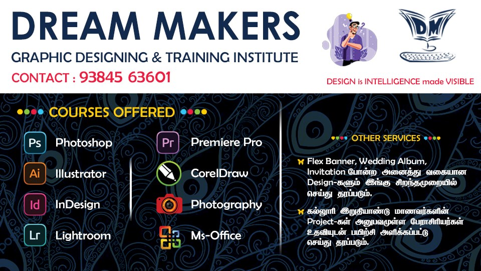

💻 Dream Makers 💻
Design is Intelligence made Visible
Dream Makers Graphic Designing & Training Institute is a micro-enterprise located in Dharmapuri, Tamil Nadu, specializing in graphic design education and academic tutoring services. Established on July 1, 2018, the institute operates as a proprietorship firm and is situated on the first floor of the Ramkumar Damodaran building, near the Dharmapuri Collectorate on Venkatampatti Road.
The institute focuses on providing specialized design services, including graphic arts and related design education. It is registered under the MSME category as a micro-enterprise and is classified under the education sector, emphasizing academic tutoring services.
For more information or to get in touch, you can visit their official website

Contact for more info
Photoshop | CorelDraw | Illustrator | InDesign | Web Development
Click to Enroll for any Course
Contact
Phone: 93845 63601
Adddess: Govt. Arts College, opposite Venkatampatti Road, Dharmapuri, Tamil Nadu 636705